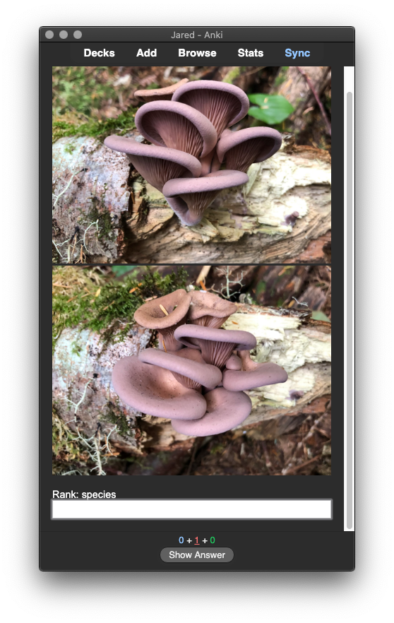
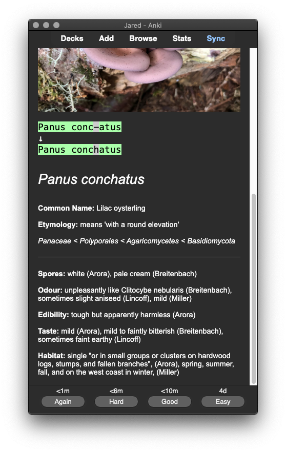

This tool transforms your iNaturalist fungi observations into detailed Anki flashcards.
Input one URL per line:
About iNatFungi2Anki
This tool is designed to help mycologists seamlessly convert their iNaturalist fungi observations into Anki flashcards. Whether you're a budding forager or a taxonomy expert, iNatFungi2Anki offers a simple way to integrate your field observations into your study routine.
How It Works
Input Your Observations: Simply paste the URLs of your iNaturalist fungi observations into the input box.
Generate Flashcards: The tool will automatically fetch the relevant details from your observations and convert them into Anki flashcards.
Learn and Review: Download your flashcards and import them into Anki to start learning!
Sample Flashcard


Resouces Used
MycoMatch: Created by Ian Gibson, iNatFungi2Anki pulls data from this software to create rich and detailed flashcards.
genanki-js: Javascript library used to generate Anki cards.